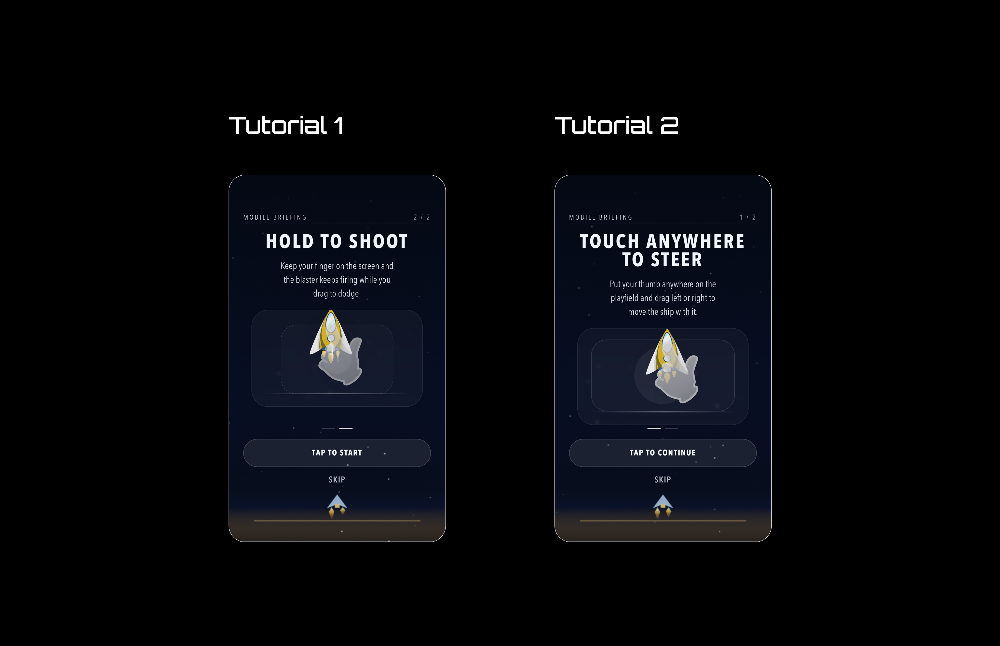
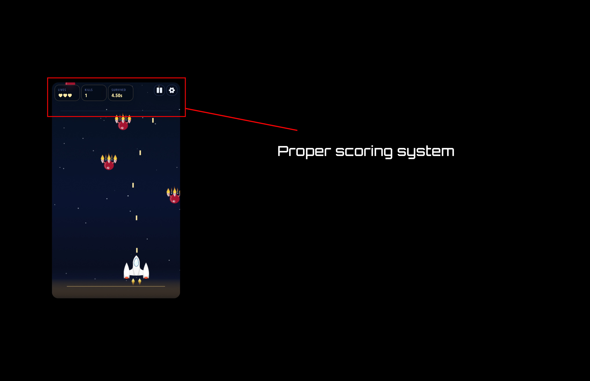
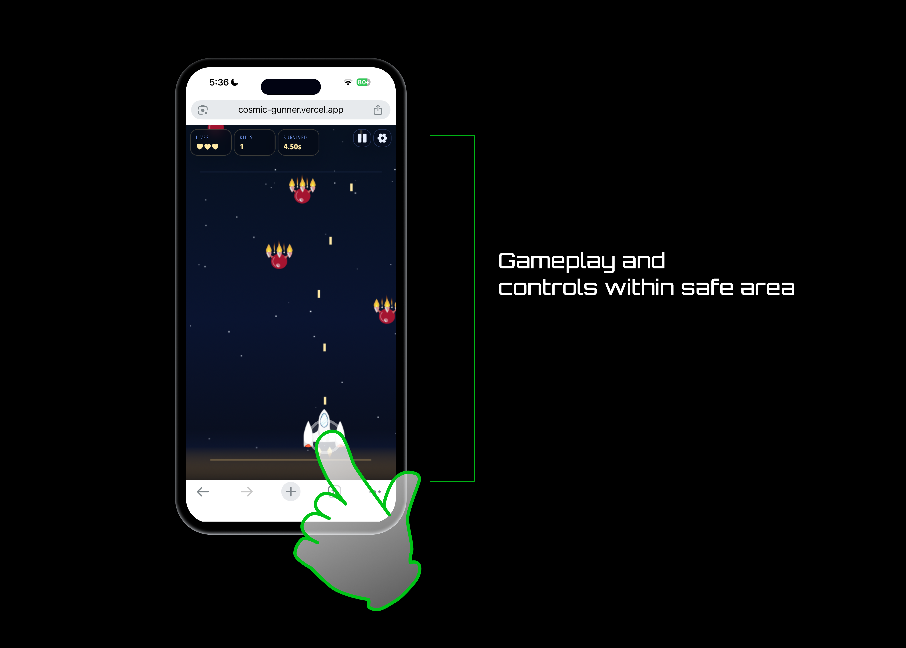
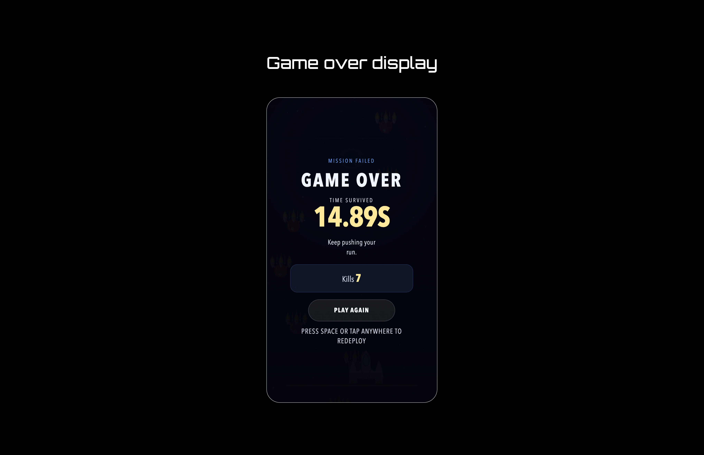
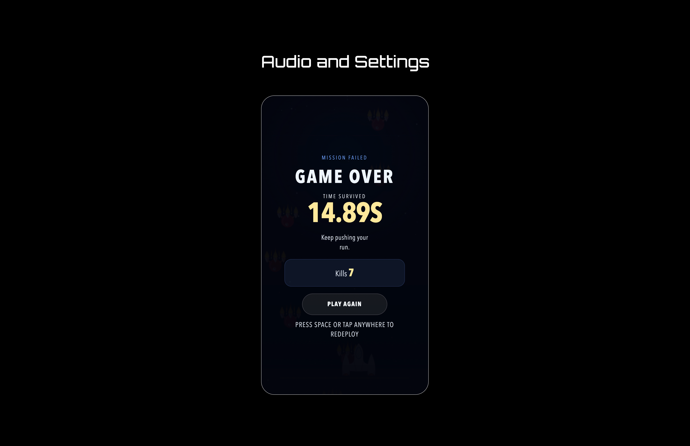
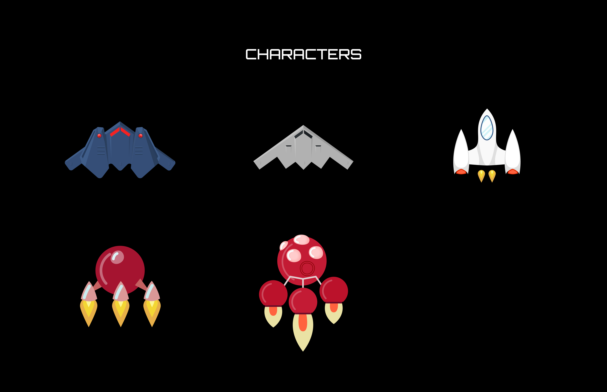

Cosmic Gunner UI/UX
Portfolio Case Study
Cosmic Gunner is a mobile-first arcade shooter built for quick sessions and readable gameplay. The project focused on making the game easy to understand in the first few seconds, easy to read while playing, and satisfying enough that players would want to try again immediately after a run ends.
Test the gameOverview
Cosmic Gunner started as a playable game prototype and evolved into a more polished player experience.
The main design goal was simple: make the game easy to understand in the first few seconds, easy to read while playing, and satisfying enough that players would want to try again immediately after a run ends.
The Problem
The core mechanics were fun, but the experience had a few issues that made the game feel harder than it should have been:
- New players were not always sure how to start or what the controls were.
- The original score-focused system did not reflect the full experience of surviving a run.
- The interface needed to stay readable while the action was moving quickly.
- Mobile players needed a layout that felt native, not squeezed inside a framed desktop-style layout.
- The game needed stronger feedback around progress, danger, and failure.
What I Changed
1. Onboarding redesign for new players
I added a clearer onboarding flow after testing the game with 32 participants, most of whom had limited gaming experience. Playtesting also showed that 70% of first-time testers understood the game instantly once the tutorial was in place. That feedback made it clear that the game needed a proper tutorial instead of expecting players to infer the controls.
The new onboarding was designed to:
- Teach the basic controls immediately.
- Show the player what to do instead of only describing it in text.
- Keep the tutorial short so it does not interrupt the fun.
- Let experienced players move through it quickly.
The result was a more welcoming first-time experience and less confusion at the start of the game.

2. Scoring system redesign
The original high-score-only approach was too narrow. It made the game feel like a number chase instead of a survival experience. That can work for some arcade games, but for this one it did not fully capture what made the gameplay enjoyable.
I changed the measuring system so progress could be felt in more than one way:
- Time survived shows endurance and how long the player stayed alive.
- Kills reward active play and good aim.
- Lives give a clear sense of risk and remaining safety.
- Enemies / threat pressure help show how difficult the run is becoming.
This made the game feel more rewarding because players were not judged by one score alone. They could see progress in survival, combat, and decision-making at the same time. It also made runs feel more dynamic and enjoyable, because the player could understand what they were doing well even before the final result.

3. Mobile-first layout improvements
The game needed to work properly on smaller screens, especially for portrait mobile play. I adjusted the layout so the playable area stayed open and the interface respected safe areas on devices with notches or home indicators.
This mattered because the game feels better when the screen is dedicated to gameplay instead of being boxed into a decorative frame.

4. Better feedback and end-of-run flow
I also improved the way the game communicates success, failure, and next steps:
- Clearer state changes when the player is hit or loses a run.
- A game-over summary that gives useful feedback.
- A restart flow that makes it easy to jump back into another attempt.
- Visual emphasis that helps players understand what happened and why.
These details matter because they turn a failed run into a learning moment instead of just a dead end.

5. Audio and settings
I added audio controls so players could manage their experience more comfortably. This included volume options and persistence so settings stayed consistent between sessions.
That small addition improved usability because players could adjust the game to fit their environment without leaving the play experience.

Other Important Things I Noticed
- The game works better when the UI stays lightweight and does not compete with the action.
- Players understand the game faster when mechanics are demonstrated visually.
- Mobile users need immediate clarity because there is less room for exploration.
- A run feels more satisfying when the summary includes more than one performance measure.
- Clear feedback after mistakes makes the game feel more fair and more replayable.
- The overall experience is stronger when the first playthrough teaches, rather than overwhelms.
Outcome
The final experience is easier to understand, easier to play on mobile, and more rewarding to replay. The onboarding helps new users get started faster, the updated scoring system makes progress feel richer, and the interface stays focused on the gameplay instead of distracting from it.
Testers were also more willing to play again after the changes, which was a good sign that the experience felt clearer and more inviting.
Bonus
The game characters were designed by me.

Final Portfolio Note
If I were presenting this case study in a portfolio, I would position it as a design project that improved both clarity and enjoyment. The biggest wins were not just visual polish, but the product decisions behind the UI: better onboarding, a more meaningful progress system, and a cleaner player experience from start to finish.